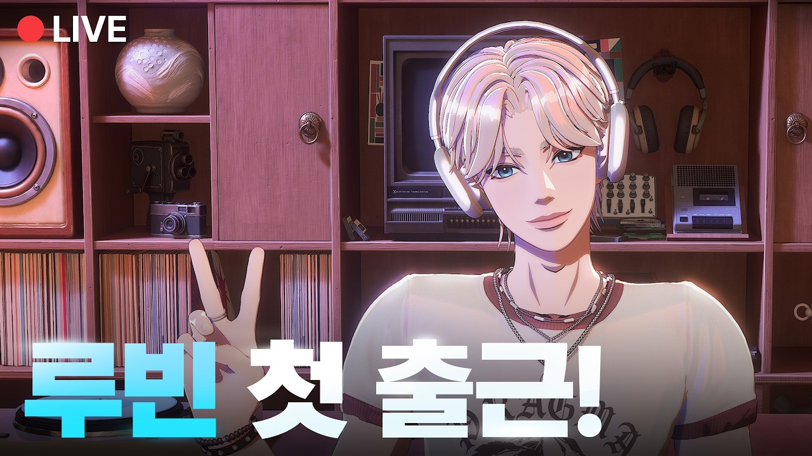
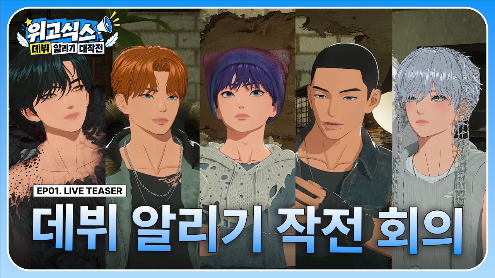
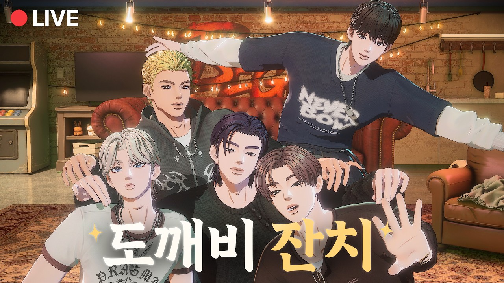
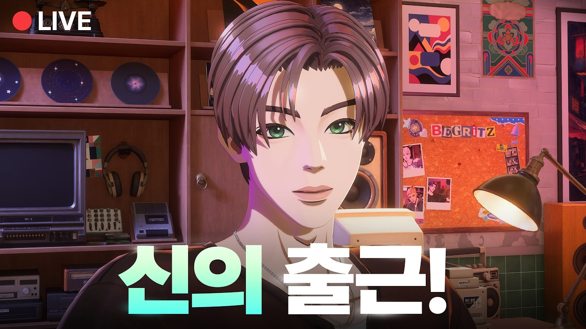

BEGRITZ LIVE EP 01｜與LUBIN的初次 Moonwalking

12pt
繁體中文點播放後，字幕會顯示在這裡
韓文
00:00 / --:--
展開雙語逐字稿 點擊查看完整內容
雙語逐字稿
文字大小
其他語音紀錄
WE GO-6 出道宣傳大作戰 #1直播日期：2026-09-27 · WE GO-6 · YOUTUBE

WE GO-6 위데알대 LIVE EP1 TEASER｜所以要怎麼讓大家知道我們出道了呢？直播日期：2026-09-27 · WE GO-6 · YOUTUBE
BEGRITZ EP.06 鬼怪宴會 l首次全體 LIVE直播日期：2026-09-23 · BEGRITZ · YOUTUBE
BEGRITZ LIVE EP 05. 被SINI「中毒」的 TIME直播日期：2026-09-16 · BEGRITZ · YOUTUBE · SINI